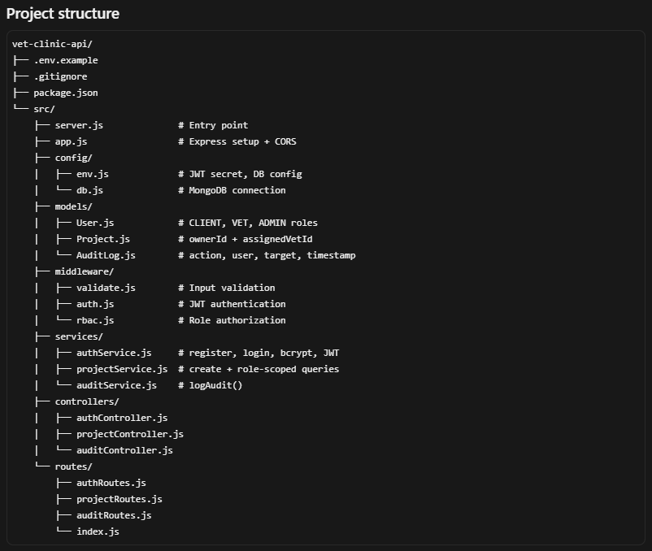
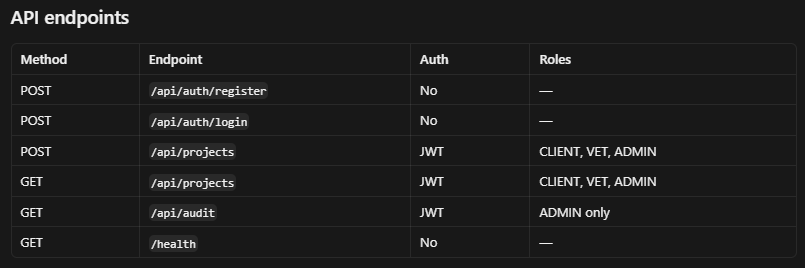
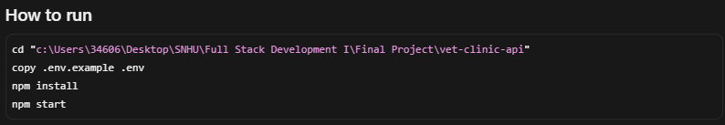

The artifact I am including in my ePortfolio is the role-based access control (RBAC) structure I implemented for my veterinarian backend application, an enhancement I developed from a previous coursework by adding user roles, JWT authentication, authorization middleware, and role-aware access to protected routes and resources. The artifact improved from a basic authenticated API, where any logged-in user had the same access
I selected this item because RBAC was the main focus of my enhancement and it clearly demonstrates my software development skills in secure API design, middleware implementation, database modeling with role enums, and organizing code into a maintainable structure with separate layers for authentication, authorization, services, and controllers.
I learned that authentication and authorization are separate concerns, that middleware is the right place to enforce role rules, and that secure design means filtering database queries by role and ownerId—not just checking a token—but I also faced challenges such as deciding how many roles to include without overcomplicating the system, debugging 401 and 403 errors, and making sure each route had the correct role restrictions; overall, this enhancement helped me grow from implementing basic login features to designing a secure, role-driven backend architecture on my own.


